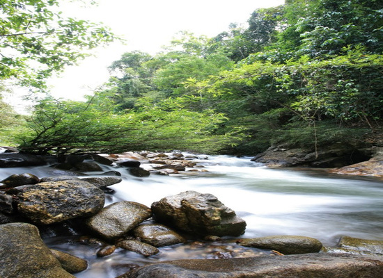

น้ำตกหินลาด
น้ำตกหินลาด โดยน้ำตกนั้นตั้งอยู่ที่ หมู่ที่ 1 ตำบลกะปง อำเภอกะปง จังหวัดพังงา เป็นน้ำตกที่มีความสวยงาม พื้นที่ส่วนใหญ่มีลักษณะเป็นแก่งหิน นักท่องเที่ยวสามารถลงเล่นน้ำได้ตลอดทั้งปี เป็นน้ำตกที่เกิดจากคลอง 3 คลอง คือ คลองบางใหญ่ คลองเขาไม้แก้ว และคลองมะละกอ ไหลมาบรรจบกัน ปัจจุบันเป็นอีกหนึ่งสถานที่ท่องเที่ยวที่มีชื่อเสียงของจังหวัดพังงา น้ำตกอยู่ห่างจากที่ว่าการอำเภอกะปงไปทางทิศตะวันออก ประมาณ 8 กิโลเมตร
น้ำตกลำปี
น้ำตกลำปี น้ำตกลำปีอยู่ในบริเวณอุทยานแห่งชาติเขาลำปี-หาดท้ายเหมือง อ.ท้ายเหมือง จ.พังงา น้ำตกลำปีมีต้นกำเนิดมาจากเทือกเขาลำปี จัดได้ว่าเป็นน้ำตกขนาดกลางๆ มีแอ่งน้ำขนาดใหญ่ ใสสะอาดบริเวณด้านหน้าของน้ำตกชั้นล่างสุด เป็นน้ำตกที่มีชื่อเสียงและมีความงดงามทางธรรมชาติอย่างมากแห่งหนึ่ง จึงเป็นที่นิยมสำหรับการมาพักผ่อนหย่อนใจ โดยเฉพาะอย่างยิ่งในฤดูฝน ที่จะมีนักท่องเที่ยวมาเยี่ยมชมมากเป็นพิเศษ
น้ำตกโตนไพร ท่าซอ
น้ำตกโตนไพร เป็นน้ำตกที่ค่อนข้างมีความสวยงาม โดยมีความสูงประมาณ 50 เมตร โดยน้ำตกมีต้นกำเนิดมาจากเขาโตนย่านไทรที่มีความสวยงามและมีความอุดมสมบูรณ์ทางธรรมชาติมากแห่งหนึ่ง
ด้านล่างเป็นแอ่งน้ำขนาดใหญ่ นักท่องเที่ยวที่มาเยือนสามารถลงเล่นน้ำได้ หากเดินทางไปน้ำตกแห่งนี้ควรไปช่วงหน้าแล้วเนื่องจากสามารถเดินทางได้สะดวก
การเดินทาง จากอำเภอท้ายเหมือง ตามทางหลวงหมายเลข 4 บริเวณกิโลเมตรที่ 28-29 ให้เลี้ยวขวาเข้าไปอีก 7 กิโลเมตร อยู่ในบริเวณอุทยานแห่งชาติเขาลำปี-หาดท้ายเหมือง อ.ท้ายเหมือง จ.พังงา
น้ำตกสายรุ้ง
น้ำตกสายรุ้ง ตั้งอยู่หมู่ที่ ๓ ตำบลบ่อแสน ห่างจากตัวเมืองพังงา ๑๙ กิโลเมตร อยู่ก่อนถึงอำเภอทับปุด ๘ กิโลเมตร เป็นน้ำตกที่ไหลจากในถ้ำ และไหลสู่ฝายเพื่อกักเก็บน้ำให้ประชาชนได้ใช้ ภายในบริเวณน้ำตกร่มรื่นสามารถเล่นน้ำได้
น้ำตก เต่าทอง
น้ำตก เต่าทอง บ้านต้นแซะ ต.โคกกลอย อ.ตะกั่วทุ่ง จ.พังงา อีกสถานที่พักผ่อน บรรยากาศดี เดินทางสะดวก สามารถชมทัศนียภาพได้ 360 องศา มองเห็นทะเล อ่าว เรือเดินสมุทร เหมาะสำหรับ การกางเต้นพักแรม กิจกรรมชุมนุม ประชุม จัดเลี้ยง งานสังสรรค์ ที่ต้องการความเป็นธรรมชาติ